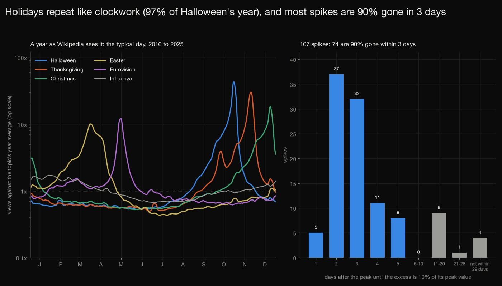
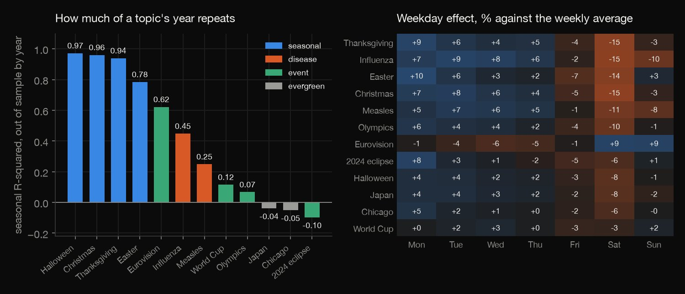
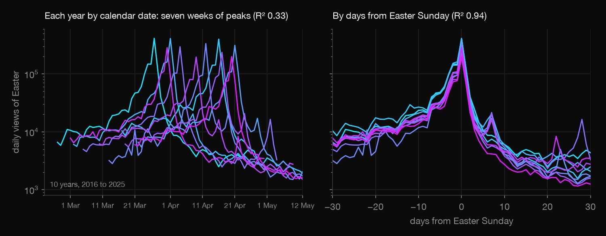
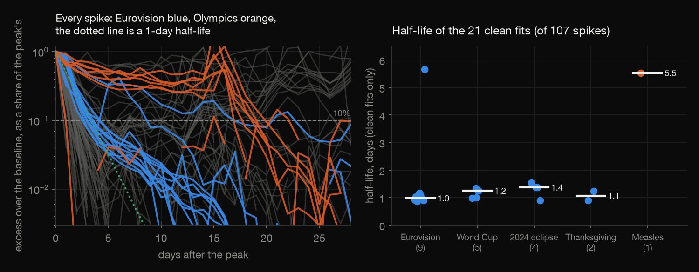
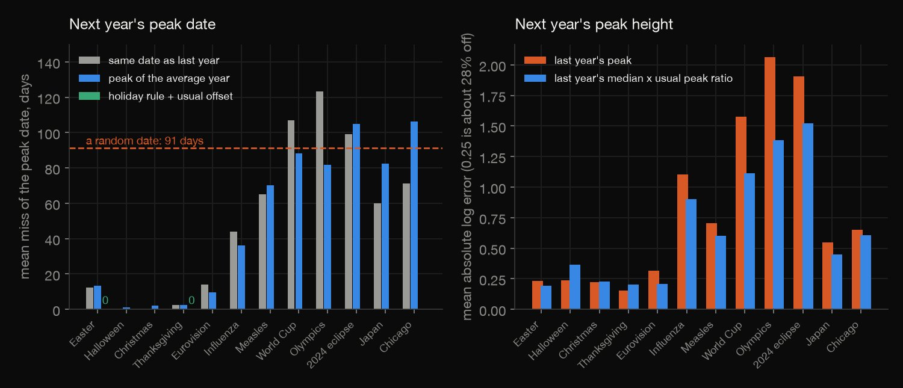
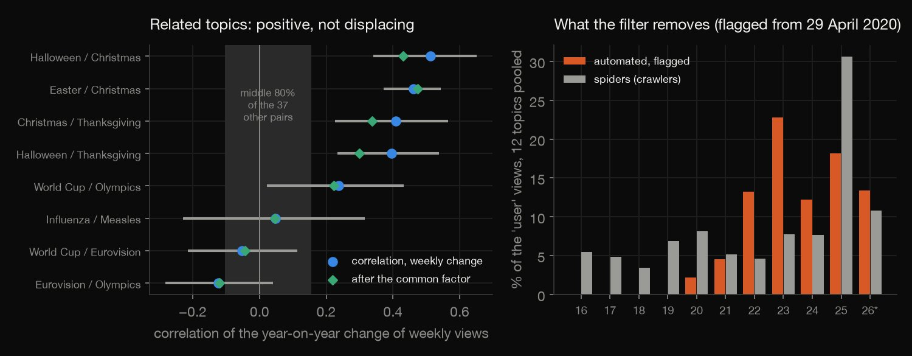

Python · Time series · 2026-10
Can Wikipedia Page Views Predict Next Year's Peak?
On Wikipedia a holiday's peak date is known to the day (Easter: 12 days off by last year's date, 0 by the holiday rule) but its height is off by about 26%; 76 of 107 spikes lose half their excess the next day; related topics move together (r 0.24), not against each other.

Page views are attention to one site, not Google search interest, and depend on search engines sending readers. 'user' drops crawlers and, from 29 April 2020, flagged automated traffic, not all bots (flagged bots reach 23% of 'user' in 2023); levels fell to 0.63 of 2023 and the cause is untested. 12 hand-picked English-Wikipedia topics, at most 7 forecasts each. Source: Wikimedia Pageviews API, CC0; the 0.65 MB counts file is committed.
01 — The problem
Search interest has a calendar, spikes and a half-life, and it is the usual way to see what people care about. Can the page views of Wikipedia articles forecast when next year's peak of attention comes and how high it reaches, and what do those views really measure?
The task follows GeeksforGeeks' "Google Search Analysis". Google Trends has no open API, so the stand-in is the Wikimedia Pageviews API: daily views of 12 English-Wikipedia articles (four holidays, two diseases, four events, two evergreen controls), 2016 to September 2026, public domain (CC0).
02 — What I built
Twelve topics, tested five ways:
- The audit: what the 'user' filter removes (flagged bots, crawlers), redirect titles, missing days.
- Seasonality and weekdays: a leave-one-year-out score, and Easter and Thanksgiving by calendar date against by days from the holiday.
- Spikes: 107 of them, the days until each is 90% gone and, where a fit is possible, its half-life.
- Walk-forward: the date and height of each year's peak, forecast from the earlier years only.
- Displacement and check: correlations of the 66 topic pairs, and
check.pyrecounts all 4,775 numbers in plain Python from the stored daily counts.
03 — How it was built
- 01
Download the daily counts
The Wikimedia Pageviews API, one request per article and agent (39 in all: the 12 topics as 'user', 'automated' and 'spider', and three redirect titles), sequentially with a one-second pause and a User-Agent that names the project and its author. The 23 MB of JSON stays out of the repo; a 0.65 MB CSV of the counts (CC0 data) is committed so the check runs without downloading.
jobs = [(a, "user") for a in TOPICS + REDIRECTS] + [(a, g) for g in ("automated", "spider") for a in TOPICS] - 02
Score the seasonality by leaving a year out
For 2016 to 2025 each day's log views (minus its weekday effect and its year's mean) are predicted by the mean of the same calendar date in the other nine years; the seasonal R-squared is one minus the ratio of squared errors. Easter and Thanksgiving are scored again over the 61 days around them, by calendar date and by offset from the holiday.
k = years[i] - 2016; others = np.delete(M[:, pos(idx[i])], k); sse += (d[i] - np.nanmean(others)) ** 2; sst += (d[i] - dbar) ** 2 - 03
Find the spikes and their decay
A day at least five times the median of the previous 28 days, and at least 3,000 views, starts an event; the peak is the largest day in the next 14. The excess over that baseline is followed for 29 days, to the day it falls to 10% of the peak's (t10); where four or more days are above that floor, a line through the log excess gives the half-life.
p = i + int(np.argmax(v[i:min(i + PEAK_DAYS, N)])); ex = v[p:min(p + FIT_DAYS, N)] - B; t10 = next((k for k in range(1, len(ex)) if ex[k] <= FLOOR * ex[0]), None) - 04
Forecast each year's peak from the earlier years
For 2019 to 2025 the peak date is forecast three ways (last year's date, the peak of the average year, a holiday rule) and the height four ways (last year's peak, the geometric mean of the earlier peaks, last year's median times the usual peak-to-median ratio, and that with the trend); scores are the miss in days and the absolute log error.
ratio = float(np.exp(np.mean([math.log(info[k]["peak"] / info[k]["base"]) for k in prev]))); b1, b2 = info[yr - 1]["base"], info[yr - 2]["base"] - 05
Recount it all without the libraries
check.pyreads the raw JSON (and compares it with the committed CSV cell by cell), then recomputes every table with loops and closed-form least squares, the holiday dates by a different algorithm fromanalyze.py's: 4,775 numbers to a relative tolerance of 1e-9. It includes the effective sample size behind each correlation's interval.r = corr(X[a], X[b]); ne = min(n, max(10, n / (1 + 2 * sum(acf(X[a], l) * acf(X[b], l) for l in range(1, 13)))))
04 — Results
What the data is, and what 'user' removes. Daily English-Wikipedia views of 12 articles, 3,926 days, with agent 'user'. Wikimedia flags automated traffic only from 29 April 2020, so earlier 'user' counts include bots that would now be flagged; in the table, 'Flagged bots' and 'Crawlers' (self-identified spiders, never in 'user') are percentages of the 'user' views, 12 topics pooled (* January to September). Bots that look like people stay in: 82% of Chicago's 'user' views in 2025 were flagged as automated, and 145% of Thanksgiving's in 2026.
| Year | Flagged bots | Crawlers |
|---|---|---|
| 2016 | 0.0% | 5.5% |
| 2017 | 0.0% | 4.8% |
| 2018 | 0.0% | 3.4% |
| 2019 | 0.0% | 6.9% |
| 2020 | 2.2% | 8.1% |
| 2021 | 4.5% | 5.1% |
| 2022 | 13.2% | 4.6% |
| 2023 | 22.8% | 7.7% |
| 2024 | 12.2% | 7.7% |
| 2025 | 18.2% | 30.6% |
| 2026* | 13.4% | 10.8% |
Holidays repeat; events and places do not. The seasonal R² is how much of a day's (weekday-adjusted, log) views is predicted by the same calendar date in the nine other years: 0.97 for Halloween, whose busiest week has 82 times the views of its quietest, but -0.04 for Japan and 0.12 for the World Cup. Influenza (0.45) peaks in 1 Feb but only 2.6 times its trough. Saturday is the quietest day for 10 of the 12 topics; the swing runs from 6% to 28%, and Eurovision, whose final is on a Saturday, is busiest then. Days are UTC.
| Topic | R² | Swing | Peak day |
|---|---|---|---|
| Halloween | 0.97 | 82x | 30 Oct |
| Christmas | 0.96 | 35x | 23 Dec |
| Thanksgiving | 0.94 | 61x | 24 Nov |
| Easter | 0.78 | 23x | 30 Mar |
| Eurovision | 0.62 | 20x | 15 May |
| Influenza | 0.45 | 3x | 1 Feb |
| Measles | 0.25 | 2x | 27 Feb |
| World Cup | 0.12 | 3x | 16 Jun |
| Olympics | 0.07 | 3x | 8 Aug |
| Japan | -0.04 | 1x | 28 Feb |
| Chicago | -0.05 | 1x | 6 Nov |
| 2024 eclipse | -0.10 | 3x | 8 Apr |

A moving date breaks a calendar model. Easter's date spans 25 days in these years. Over the 61 days around it, the calendar-date model scores R² 0.33 and the same model by days from Easter 0.94; for Thanksgiving (a 6-day span) 0.86 against 0.97. The peak is on the holiday itself in the median year.

Spikes are short. A spike is a day of at least 3,000 views and five times the median of the previous 28 days: 107 of them. In 76 the excess over that baseline is down to half the day after the peak, in 74 it is down to 10% within three days. Only 21 have a clean exponential decay (at least four days to fit, R² of 0.8): their half-life has a median of 1.1 days, but that sample leaves out every faster spike, so it is not a half-life of attention in general. The four holidays' 54 spikes fade because the calendar moves on; the Olympics' take 17 to 20 days to fall to 10% in 6 of 7 cases, about the length of the Games, with poor exponential fits (R² 0.26 to 0.48). 10 of Thanksgiving's 20 spikes fall on the second Monday of October, Canadian Thanksgiving, in the same article. News spikes are too few to give a half-life of their own: the 2024 eclipse article also spiked on the days of other eclipses (365,407 views on 21 August 2017).
| Group | Spikes | Half, day 1 | 90%, day 3 |
|---|---|---|---|
| Holidays | 54 | 53 | 51 |
| Diseases | 3 | 1 | 1 |
| Events | 48 | 20 | 20 |
| Evergreen | 2 | 2 | 2 |
| All | 107 | 76 | 74 |

Next year's peak date is known for holidays, and its height to about a quarter. Every year from 2019 to 2025 is forecast from the years before it only. In the table, Last year and Rule are the mean number of days between the forecast and the actual peak day (last year's date; and for Easter and Thanksgiving the holiday rule, which is calendar knowledge and not statistics) and Height is the mean absolute log error of last year's peak (26% off for the five annual topics; 1.22 for the seven others is a factor of 3.4). The five annual topics miss the date by 5.8 days on average, the other seven by 81 (a random date: 91). Only 7 forecasts per topic.
| Topic | Last year | Rule | Height |
|---|---|---|---|
| Easter | 12.4 | 0.0 | 0.23 |
| Halloween | 0.0 | - | 0.24 |
| Christmas | 0.0 | - | 0.22 |
| Thanksgiving | 2.4 | 0.0 | 0.15 |
| Eurovision | 14.1 | - | 0.31 |
| Influenza | 44.0 | - | 1.10 |
| Measles | 65.1 | - | 0.70 |
| 5 annual | 5.8 | - | 0.23 |
| 7 others | 81 | - | 1.22 |

Related topics move together; none displaces another. The correlation of the year-on-year change of weekly views averages 0.24 for the 8 related pairs (0.36 by Spearman, 0.21 after removing the common factor, the average change of Japan and Chicago; Interval is the 95% interval of r) and 0.01 for the 37 other pairs. 5 of the 8 related intervals are above zero and none is below; 1 of all 66 pairs (Easter and influenza) is, about what chance gives. This is association, not a test of displacement.
| Pair | r | Interval |
|---|---|---|
| Halloween/ Christmas | 0.51 | 0.34 to 0.65 |
| Easter/ Christmas | 0.46 | 0.37 to 0.54 |
| Christmas/ Thanksgiving | 0.41 | 0.23 to 0.56 |
| Halloween/ Thanksgiving | 0.40 | 0.23 to 0.54 |
| World Cup/ Olympics | 0.24 | 0.02 to 0.43 |
| Influenza/ Measles | 0.05 | -0.23 to 0.32 |
| World Cup/ Eurovision | -0.05 | -0.21 to 0.11 |
| Eurovision/ Olympics | -0.12 | -0.28 to 0.04 |

Levels fell. From January to September 2023 to 2026 the median topic (all but the World Cup, up 3.5x for its 2026 tournament) fell to 0.63 of its views, and to 0.49 of its 2016 level; Christmas is at 0.48 and Thanksgiving at 0.45 of 2023. Reclassification of bots, search engines and AI answers keeping readers off the site are all possible; this data cannot tell them apart.
05 — What I'd do next
- Compare with Google Trends for the same terms (by hand, as it has no open API), to see where attention on Wikipedia and in search part.
- Split the views by desktop, mobile web and app, and the flagged and unflagged traffic by day, to separate platform shifts from reclassification in the falling levels.
- Fit the long events (Olympics, World Cup) with a rise-and-fall shape rather than one decay, and add many more topics for a stable half-life of news spikes.